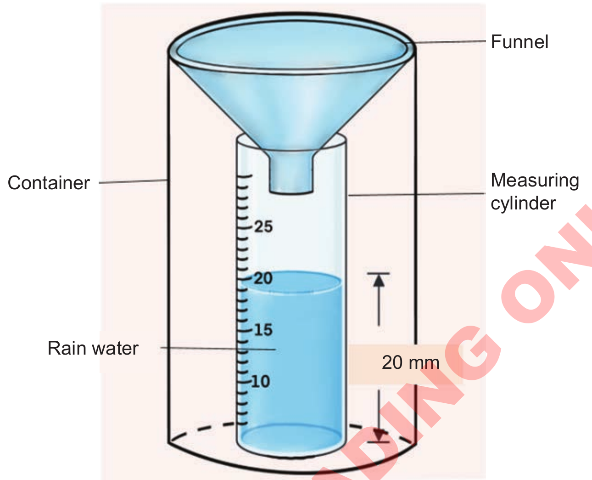

Funnel.Container.Measuring cylinder.Rain water.20 millimetres.
Figure 7: Rain gauge
Activity 9
Use the materials available in your surroundings to create a rain gauge, then measure and record the amount of rainfall over one week.
Give a summary of your experiment results and share it with your classmates.